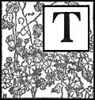
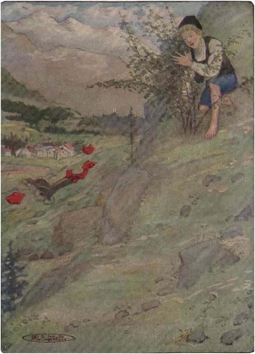

SESUATU YANG TAK TERDUGA TERJADI

Keesokan harinya fajar menyingsing tanpa awan dan cerah. Kakek masih bersama anak-anak ketika Peter datang memanjat; kambing-kambingnya menjaga jarak yang cukup jauh darinya, untuk menghindari cambuk yang terus mencambuknya dari kanan ke kiri. Sebenarnya, anak laki-laki itu sangat kesal dan marah karena perubahan yang telah terjadi. Ketika ia melewati gubuk di pagi hari, Heidi selalu sibuk dengan anak asing itu, dan di malam hari pun sama. Sepanjang musim panas Heidi tidak pernah bangun bersamanya sekali pun; itu terlalu berat! Dan hari ini akhirnya ia datang, tetapi lagi-lagi ditemani oleh orang asing yang menyebalkan ini.
Saat itulah Peter memperhatikan kursi roda yang berdiri di dekat gubuk. Setelah mengamati sekelilingnya dengan saksama, ia bergegas menuju benda yang dibencinya itu dan mendorongnya menuruni lereng. Kursi itu seolah terbang dan segera menghilang.
Hati nurani Peter menghantamnya sekarang, dan dia berlari mendaki Pegunungan Alpen, tidak berani berhenti sampai dia mencapai semak beri hitam. Di sana dia bisa bersembunyi, ketika pamannya mungkin muncul. Melihat ke bawah, dia menyaksikan musuhnya yang jatuh terguling ke bawah, ke bawah.
Terkadang benda itu dilemparkan tinggi ke udara, lalu jatuh lagi di saat berikutnya dengan lebih keras dari sebelumnya. Pecahan-pecahannya berjatuhan ke kanan dan kiri, dan tertiup angin. Kini orang asing itu harus pulang dan Heidi akan kembali menjadi miliknya! Tetapi Peter telah lupa bahwa perbuatan buruk selalu mendatangkan hukuman.

DIA MENYAKSIKAN MUSUHNYA YANG JATUH TERJUNGKUL KE BAWAH, KE BAWAH
Heidi baru saja keluar dari gubuk. Kakeknya, bersama Clara, mengikutinya. Heidi awalnya berdiri diam, lalu berlari ke kanan dan ke kiri, ia kembali kepada lelaki tua itu.
"Apa maksudnya ini? Apakah kamu sudah memindahkan kursinya, Heidi?" tanyanya.
"Aku mencarinya di mana-mana, kakek. Kakek bilang itu di samping pintu toko," kata anak itu, masih mencari benda yang hilang. Angin kencang bertiup, yang pada saat itu menutup pintu toko dengan keras.
"Kakek, anginlah yang menyebabkannya," seru Heidi dengan antusias. "Oh, astaga! Jika sudah tertiup sampai ke desa, maka sudah terlambat untuk pergi hari ini. Akan butuh waktu lama untuk mengambilnya."
"Jika benda itu menggelinding ke sana, kita tidak akan pernah bisa mengambilnya lagi, karena pasti sudah hancur berkeping-keping," kata lelaki tua itu, sambil menunduk dan mengukur jarak dari sudut gubuk.
"Saya tidak mengerti bagaimana itu bisa terjadi," ujarnya.
"Sayang sekali! Sekarang aku tidak akan pernah bisa pergi ke padang rumput," ratap Clara. "Aku takut aku harus pulang sekarang. Sungguh disayangkan, sungguh disayangkan!"
"Kakek, kau bisa menemukan cara agar dia tetap tinggal, kan?"
"Kita akan pergi ke padang rumput hari ini, seperti yang telah kita rencanakan. Kemudian kita akan lihat apa yang terjadi selanjutnya."
Anak-anak sangat gembira, dan kakek segera bersiap-siap. Pertama-tama ia mengambil setumpuk selimut, dan mendudukkan Clara di tempat yang cerah di tanah yang kering, lalu ia menyiapkan sarapan mereka.
"Aku heran kenapa Peter terlambat sekali hari ini," katanya, sambil menggiring kambing-kambingnya keluar dari kandang. Kemudian, sambil mengangkat Clara dengan satu lengan kuatnya, ia membawa selimut dengan lengan yang lain.
"Sekarang, jalan!" serunya. "Kambing-kambing itu ikut bersama kita."
Itu cocok untuk Heidi, dan dengan satu lengan merangkul Schwänli dan lengan lainnya merangkul Bärli , dia berjalan mendekat. Teman-teman kecilnya sangat senang bisa bersamanya lagi sehingga mereka hampir meremasnya karena terlalu menyayanginya.
Betapa terkejutnya mereka ketika, setelah sampai di puncak, mereka melihat Petrus sudah terbaring di tanah, dengan kawanan dombanya yang tenang di sekelilingnya.
"Apa maksudmu berjalan melewati kami seperti itu? Akan kuberi pelajaran!" teriak pamannya kepadanya.
Peter merasa takut, karena dia mengenal suara itu.
"Belum ada yang bangun," balas bocah itu.
"Apakah kamu melihat kursinya?" tanya paman itu lagi.
"Yang mana?" geram Peter.
Sang paman tak berkata apa-apa lagi. Sambil membuka selimut, ia membaringkan Clara di atas rumput kering. Kemudian, setelah memastikan Clara nyaman, ia bersiap untuk pulang. Ketiganya akan tinggal di sana sampai ia kembali di malam hari. Saat waktu makan malam tiba, Heidi harus menyiapkan makanan dan memastikan Clara mendapatkan susu Schwänli .
Langit berwarna biru tua, dan salju di puncak-puncak gunung berkilauan. Burung elang melayang di atas tebing-tebing berbatu. Anak-anak merasa sangat bahagia. Sesekali salah satu kambing akan datang dan berbaring di dekat mereka. Kambing kecil yang lembut, Snowhopper, datang lebih sering daripada yang lain dan akan menggosokkan kepalanya ke bahu mereka.
Mereka telah duduk tenang selama beberapa jam, menikmati keindahan di sekitar mereka, ketika Heidi tiba-tiba mulai merindukan tempat di mana begitu banyak bunga tumbuh. Di malam hari akan terlalu larut untuk melihatnya, karena mereka selalu memejamkan mata kecil mereka saat itu.
"Oh, Clara," katanya ragu-ragu, "apakah kau akan marah jika aku pergi sebentar dan meninggalkanmu sendirian? Aku ingin melihat bunga-bunga; Tapi tunggu!— " Sambil melompat pergi, ia membawakan Clara beberapa ikat rempah-rempah harum dan meletakkannya di pangkuannya. Tak lama kemudian ia kembali dengan Snowhopper kecil .
"Jadi, sekarang kau tidak perlu sendirian lagi," kata Heidi. Setelah Clara meyakinkannya bahwa ia akan senang ditinggal sendirian bersama kambing-kambing itu, Heidi mulai berjalan-jalan. Clara perlahan-lahan memberikan sehelai daun demi sehelai daun kepada makhluk kecil itu; ia menjadi semakin jinak, dan sambil berdekatan dengan anak itu, memakan tumbuhan dari tangannya. Mudah terlihat betapa bahagianya ia berada jauh dari kambing-kambing besar yang berisik, yang sering mengganggunya. Clara merasakan sensasi kepuasan yang belum pernah ia alami sebelumnya. Ia senang duduk di lereng gunung itu bersama kambing kecil yang jinak di sisinya. Sebuah keinginan besar muncul di hatinya saat itu. Ia ingin menjadi tuan atas dirinya sendiri dan mampu membantu orang lain alih-alih dibantu oleh mereka. Banyak pikiran dan gagasan lain melintas di benaknya. Bagaimana rasanya tinggal di sini dengan sinar matahari yang terus menerus? Dunia tiba-tiba tampak begitu gembira dan indah. Firasat akan kebahagiaan masa depan yang tak terbayangkan membuat jantungnya berdebar kencang. Tiba-tiba ia memeluk kambing kecil itu dengan kedua tangannya dan berkata: "Oh, Snowhopper kecil , betapa indahnya di sini! Seandainya aku bisa selalu bersamamu!"
Sementara itu, Heidi telah sampai di tempat itu, di mana, seperti yang dia duga, seluruh tanah tertutup oleh bunga mawar batu berwarna kuning. Berdekatan dalam kelompok-kelompok kecil, bunga lonceng biru bergoyang lembut tertiup angin. Tetapi semua aroma yang memenuhi udara berasal dari bunga-bunga kecil berwarna cokelat yang menyembunyikan kepala mereka di antara kelopak bunga berwarna keemasan. Heidi berdiri terpukau, menghirup udara yang harum itu.
Tiba-tiba dia berbalik dan berlari kembali ke Clara, berteriak dari jauh: "Oh, kau harus ikut, Clara, tempat itu sangat indah. Malam hari nanti tidak akan seindah ini lagi. Tidakkah kau pikir aku bisa menggendongmu?"
"Tapi Heidi," kata Clara, "tentu saja kamu tidak bisa; kamu jauh lebih kecil dariku. Oh, aku berharap aku bisa berjalan!"
Heidi merenung sejenak. Peter masih terbaring di tanah. Dia telah menatap ke bawah selama berjam-jam, tidak percaya dengan apa yang dilihatnya di hadapannya. Dia telah menghancurkan kursi untuk menyingkirkan orang asing itu, dan di sana dia lagi, duduk tepat di samping teman bermainnya.
Heidi kemudian memanggilnya untuk turun, tetapi sebagai jawaban dia hanya menggerutu: "Tidak mau turun."
"Tapi kau harus; cepat kemari, karena aku ingin kau membantuku. Cepat!" desak anak itu.
"Tidak mau," terdengar jawabannya.
Heidi bergegas mendaki gunung dan berteriak marah kepada anak laki-laki itu: "Peter, jika kau tidak datang sekarang juga, aku akan melakukan sesuatu yang tidak akan kau sukai."
Kata-kata itu membuat Peter takut, karena hati nuraninya tidak tenang. Perbuatannya telah membuatnya gembira hingga saat ini, ketika Heidi berbicara seolah-olah dia tahu semuanya. Bagaimana jika kakeknya mendengar tentang hal itu! Dengan gemetar ketakutan, Peter menurut.
"Aku hanya akan datang jika kau berjanji untuk tidak melakukan apa yang kau katakan," desak bocah itu.
"Tidak, tidak, aku tidak mau. Jangan takut," kata Heidi dengan penuh pengertian: "Ikut saja; ini tidak sulit."
Saat mendekati Clara, Peter disuruh membantu mengangkat anak lumpuh itu dari tanah di satu sisi, sementara Heidi membantu di sisi lainnya. Awalnya berjalan cukup mudah, tetapi kesulitan segera muncul. Clara tidak mampu berdiri sendiri, dan bagaimana mereka bisa melangkah lebih jauh?
"Kau harus menggendongku di leher," kata Heidi, yang telah melihat betapa buruknya mereka sebagai pemandu.
Bocah itu, yang belum pernah menawarkan lengannya kepada siapa pun seumur hidupnya, harus diajari caranya terlebih dahulu, sebelum upaya lebih lanjut dapat dilakukan. Tetapi itu terlalu sulit. Clara mencoba melangkah maju, tetapi menjadi putus asa.
"Tekan kakimu lebih dalam ke tanah dan aku yakin rasa sakitnya akan berkurang," saran Heidi.
"Apakah kamu berpikir begitu?" tanya Clara dengan malu-malu.
Namun, menuruti perintah, dia memberanikan diri melangkah lebih tegas dan segera diikuti langkah lainnya, sambil mengeluarkan seruan kecil saat berjalan.
"Oh, ternyata rasa sakitnya berkurang," katanya dengan gembira.
"Cobalah lagi," desak Heidi. Clara melakukannya, dan melangkah lagi, lalu lagi, dan lagi. Tiba-tiba dia berseru keras: "Oh, Heidi, aku bisa melakukannya. Oh, aku benar-benar bisa. Lihat saja! Aku bisa melangkah, satu demi satu."
Heidi berseru dengan gembira: "Oh, Clara, benarkah? Bisakah kamu berjalan? Oh, bisakah kamu melangkah sekarang? Oh, seandainya kakek datang! Sekarang kamu bisa berjalan, Clara, sekarang kamu bisa berjalan," dia terus berkata dengan gembira.
Clara memegang erat anak-anak itu, tetapi dengan setiap langkah baru, ia menjadi semakin teguh .
"Sekarang kamu bisa datang ke sini setiap hari," seru Heidi. "Sekarang kita bisa berjalan ke mana pun kita mau dan kamu tidak perlu lagi didorong di kursi roda. Sekarang kamu akan bisa berjalan seumur hidupmu. Oh, betapa bahagianya!"
Keinginan terbesar Clara, untuk bisa sehat seperti orang lain, akhirnya terpenuhi. Jarak ke ladang bunga tidak terlalu jauh. Tak lama kemudian mereka sampai dan duduk di antara hamparan bunga yang indah. Ini adalah pertama kalinya Clara beristirahat di tanah yang kering dan hangat. Di sekeliling mereka, bunga-bunga bergoyang dan mengeluarkan aroma harumnya. Pemandangan itu sungguh menakjubkan.
Kedua anak itu hampir tidak dapat memahami kebahagiaan yang telah datang kepada mereka. Kebahagiaan itu memenuhi hati mereka dan membuat mereka terdiam. Petrus juga berbaring tanpa bergerak, karena ia telah tertidur.
begitu cepat, dan hari sudah lewat tengah hari. Tiba-tiba semua kambing datang, karena mereka mencari anak-anak itu. Mereka tidak suka merumput di antara bunga-bunga, dan senang ketika Peter terbangun karena suara embikan mereka yang keras. Bocah malang itu sangat bingung, karena ia bermimpi bahwa kursi beroda dengan bantal merah itu berdiri lagi di hadapannya. Saat bangun, ia masih melihat paku-paku emas; tetapi segera ia menyadari bahwa itu hanyalah bunga. Mengingat perbuatannya, ia dengan rela menuruti instruksi Heidi.
Ketika mereka kembali ke tempat semula, Heidi segera menyiapkan makan malam. Tasnya sangat penuh hari ini, dan Heidi bergegas memenuhi janjinya kepada Peter, yang dengan hati nurani yang buruk telah salah memahami ancamannya. Dia membuat tiga tumpukan makanan enak, dan ketika Clara dan dia selesai makan, masih banyak yang tersisa untuk anak laki-laki itu. Sayang sekali semua suguhan ini tidak memberinya kepuasan seperti biasanya, karena sepertinya ada sesuatu yang tersangkut di tenggorokannya.
Tak lama setelah makan malam mereka yang terlambat, kakek terlihat mendaki Gunung Alpen. Heidi berlari menemuinya, dengan bingung menceritakan peristiwa besar itu. Wajah lelaki tua itu berseri-seri mendengar kabar tersebut. Menghampiri Clara, dia berkata: "Jadi kalian telah mengambil risiko? Sekarang kita telah menang."
Kemudian, sambil menggendongnya, ia merangkul pinggangnya dengan satu tangan, dan tangan lainnya ia rentangkan sebagai penopang, dan dengan bantuannya Clara berjalan lebih mantap dari sebelumnya. Heidi melompat dan berlari riang di samping mereka. Di tengah kegembiraan itu, kakek tidak kehilangan akal sehatnya, dan tak lama kemudian mengangkat Clara ke lengannya untuk membawanya pulang. Ia tahu bahwa terlalu banyak tenaga akan berbahaya, dan istirahat dibutuhkan untuk gadis yang lelah itu.
Peter, yang tiba di desa pada sore hari itu, melihat kerumunan besar yang sedang berdebat. Mereka semua berdiri di sekitar sebuah benda yang menarik, dan setiap orang saling mendorong dan berebut kesempatan untuk mendekat. Benda itu tak lain adalah kursi.
"Aku melihatnya saat mereka membawanya ke atas," Peter mendengar tukang roti itu berkata. "Aku yakin harganya setidaknya lima ratus franc. Aku hanya ingin tahu bagaimana itu bisa terjadi."
"Mungkin angin yang menerbangkannya," ujar Barbara, yang ternganga menatap bantal-bantal beludru yang indah itu. "Paman sendiri yang bilang begitu."
"Untunglah kalau tidak ada orang lain yang melakukannya," lanjut tukang roti itu. "Ketika pria dari Frankfurt itu mendengar apa yang terjadi, dia pasti akan mencari tahu semuanya, dan aku akan kasihan pada pelakunya. Aku senang aku tidak berada di Alm terlalu lama, kalau tidak mereka mungkin akan mencurigaiku, seperti halnya siapa pun yang kebetulan berada di sana pada saat itu."
Banyak lagi pendapat yang dilontarkan, tetapi Peter sudah cukup mendengarnya. Dia diam-diam pergi dan pulang. Bagaimana jika mereka mengetahui bahwa dialah pelakunya? Seorang polisi bisa datang kapan saja dan mereka bisa membawanya ke penjara. Bulu kuduk Peter berdiri membayangkan hal yang mengkhawatirkan ini.
Ia begitu gelisah ketika pulang ke rumah sehingga ia tidak menjawab pertanyaan apa pun dan bahkan menolak sepiring kentangnya. Dengan tergesa-gesa ia merangkak ke tempat tidur sambil mengerang.
"Aku yakin Peter makan sorrel lagi, dan itu yang membuatnya mengerang seperti itu," kata ibunya.
"Kamu harus memberinya sedikit lebih banyak roti di pagi hari, Brigida. Ambil sepotong punyaku," kata nenek yang penyayang itu.
Saat Clara dan Heidi berbaring di tempat tidur mereka malam itu, sambil memandang bintang-bintang yang bersinar, Heidi berkata: "Tidakkah kau berpikir hari ini, Clara, bahwa untungnya Tuhan tidak selalu memberi kita apa yang kita doakan dengan sungguh-sungguh, karena Dia tahu ada sesuatu yang lebih baik?"
"Apa maksudmu, Heidi?" tanya Clara.
"Begini, saat aku di Frankfurt, aku berdoa dan terus berdoa agar bisa pulang lagi, dan ketika aku tidak bisa pulang, aku pikir Dia telah melupakanku. Tetapi jika aku pergi begitu cepat, kau tidak akan pernah datang ke sini dan tidak akan pernah sembuh."
Clara, sambil berpikir, berkata: "Tapi, Heidi, kalau begitu kita tidak bisa lagi berdoa untuk apa pun , karena kita akan merasa bahwa Dia selalu tahu sesuatu yang lebih baik."
"Tapi, Clara, kita harus berdoa kepada Tuhan setiap hari untuk menunjukkan bahwa kita tidak lupa bahwa semua karunia berasal dari-Nya. Nenek pernah berkata kepadaku bahwa Tuhan melupakan kita jika kita melupakan-Nya. Tetapi jika ada keinginan yang belum terpenuhi, kita harus menunjukkan kepercayaan kita kepada-Nya, karena Dia Maha Tahu."
"Bagaimana kau bisa memikirkan itu?" tanya Clara.
"Nenek yang memberitahuku, tapi aku tahu itu memang benar. Kita harus bersyukur kepada Tuhan hari ini karena Dia telah membuatmu bisa berjalan, Clara."
"Aku senang kau mengingatkanku, Heidi, karena aku hampir lupa karena saking gembiranya."
Kedua anak itu berdoa dan menyampaikan rasa terima kasih mereka ke surga atas kesembuhan orang sakit tersebut.
Keesokan paginya, sebuah surat ditulis untuk nenek, mengundangnya untuk datang ke Alpen dalam waktu seminggu, karena anak-anak telah berencana untuk mengejutkannya. Clara berharap saat itu ia bisa berjalan sendirian, dengan Heidi sebagai pemandu.
Hari-hari berikutnya terasa lebih bahagia bagi Clara. Setiap pagi ia terbangun dengan hatinya bernyanyi berulang-ulang, "Sekarang aku sehat! Sekarang aku bisa berjalan seperti orang lain!"
Ia semakin pulih, dan setiap hari ia berjalan lebih jauh. Nafsu makannya meningkat pesat, dan kakek harus membuat potongan roti dan mentega yang lebih besar, yang untungnya habis dengan cepat. Ia harus mengisi mangkuk demi mangkuk dengan susu berbusa untuk anak-anak yang lapar. Dengan cara itulah mereka mencapai akhir minggu yang akan membawa kedatangan nenek.